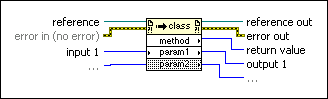

Invoke Node (ActiveX)
Owning Palette: ActiveX Functions
Requires: Base Development System (Windows)
Invokes a method or action on a reference. Most methods have associated parameters.
The node operates in the same way as a standard Invoke Node.
 Add to the block diagram Add to the block diagram |
 Find on the palette Find on the palette |